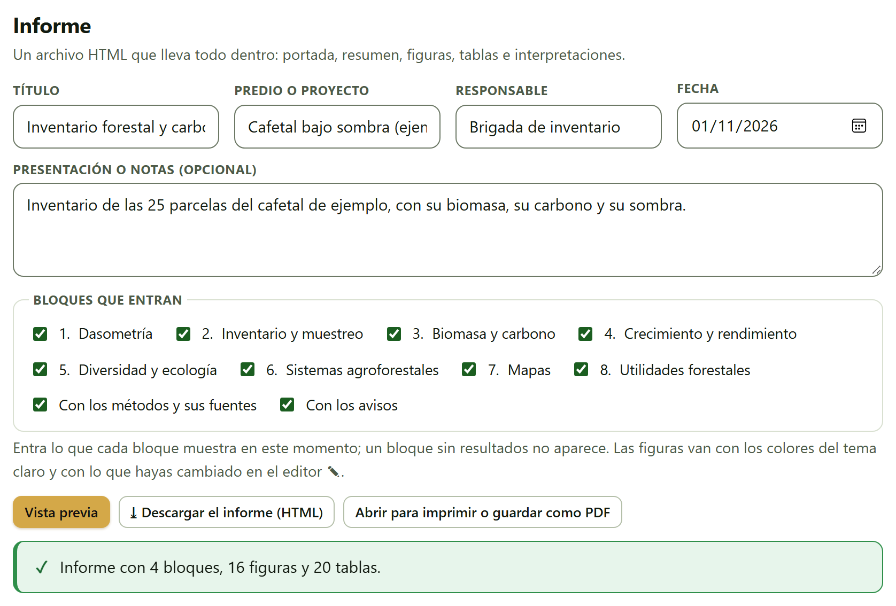
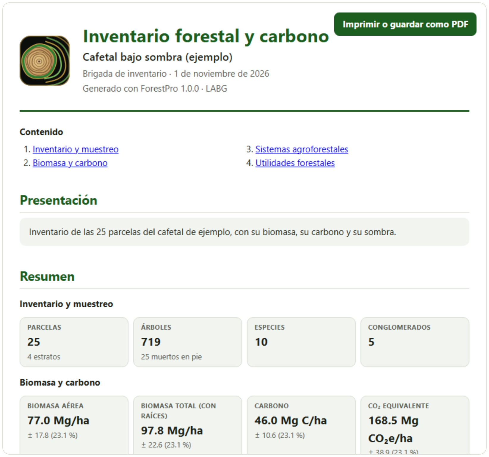
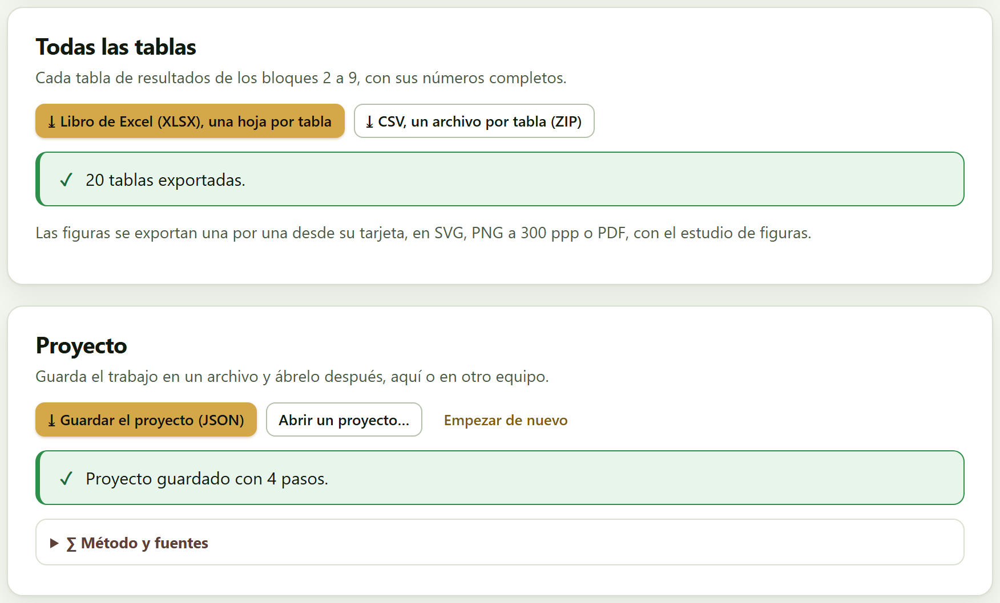
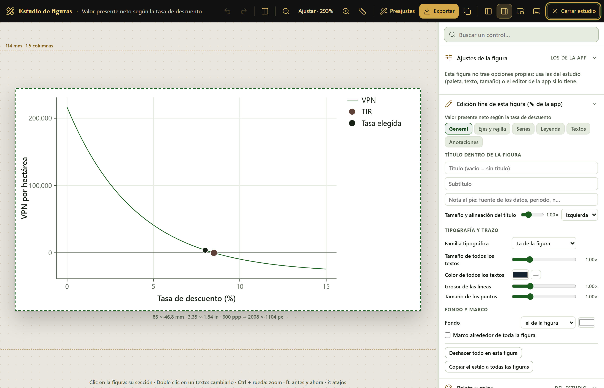
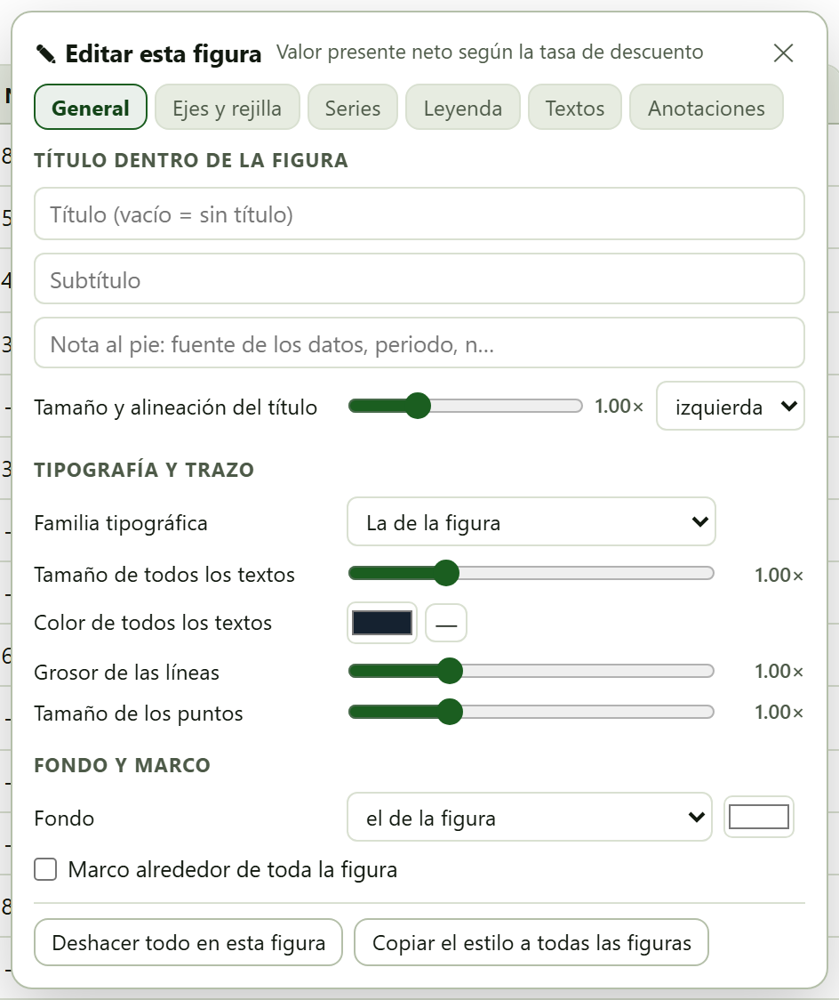
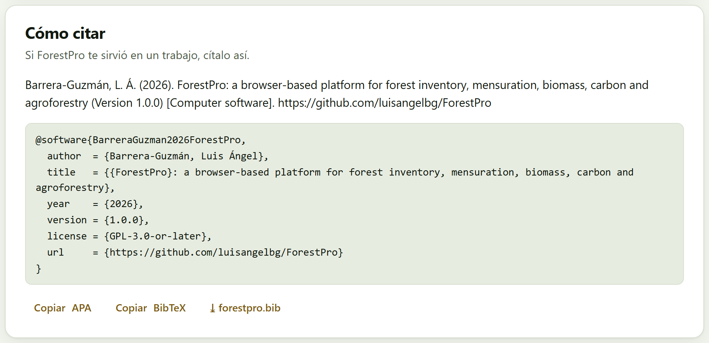

Lo que mostraron los bloques, listo para salir de la app: un informe de un solo archivo que se abre en cualquier navegador y se imprime a PDF; todas las tablas de resultados en un libro de cálculo; las figuras, una por una, desde el estudio de figuras; y el proyecto, un archivo pequeño con el que el trabajo se vuelve a abrir tal como quedó, aquí o en otro equipo. El bloque no calcula nada nuevo: reúne lo que ya está en pantalla.
Las figuras de este capítulo se hicieron con el cafetal de ejemplo abierto en los bloques 3, 4 y 7 (los botones Abrir en Inventario, Abrir en Biomasa y Abrir en Agroforestería de su tarjeta en Inicio›Datos de ejemplo) y la plantación de pino en el 9 (Abrir en Utilidades). Con eso, cuatro bloques tienen resultados y su número en la barra de la izquierda se ha vuelto una palomita.
El informe es un archivo HTML que lleva todo dentro: la portada, un resumen, las figuras, las tablas, las interpretaciones y, si quieres, los métodos con sus fuentes. No depende de la app ni de internet: se abre con doble clic en cualquier navegador, se manda por correo y se imprime a PDF.
Arriba se escriben los datos de la portada: Título (abre con «Informe forestal»), Predio o proyecto, Responsable, Fecha (la de hoy) y Presentación o notas (opcional), un texto libre que el informe pone en su propia sección. Debajo, el recuadro Bloques que entran tiene una casilla por cada bloque de resultados, todas marcadas, y otras dos: Con los métodos y sus fuentes (el recuadro «Método y fuentes» de cada tarjeta) y Con los avisos (los mensajes de advertencia de los bloques).

En Bloques que entran las casillas dicen «1. Dasometría», «2. Inventario y muestreo»… hasta «8. Utilidades forestales»: cada número es uno menos que el del bloque (Dasometría es el Bloque 2). El informe repite esa numeración en los títulos de sus secciones («2. Inventario y muestreo»), y la búsqueda (Ctrl + K) también. Guíate por el nombre, no por el número.
La nota de la tarjeta dice qué entra: «Entra lo que cada bloque muestra en este momento; un bloque sin resultados no aparece. Las figuras van con los colores del tema claro y con lo que hayas cambiado en el editor ✎.» Es decir, el informe es una fotografía de la pantalla: si cambias un control en un bloque y vuelves, el informe cambia. Tres botones:
| Botón | Qué hace |
|---|---|
| Vista previa | Arma el informe y lo muestra debajo, en un recuadro con su propia barra de desplazamiento. El mensaje dice cuántos bloques, figuras y tablas entraron. La vista previa se rehace sola al volver al bloque o al cambiar de idioma. |
| ⤓ Descargar el informe (HTML) | Arma el informe y lo descarga como forestpro_informe_<predio>.html; con el cafetal, forestpro_informe_cafetal_bajo_sombra_ejemplo.html, de cerca de 1.6 MB. |
| Abrir para imprimir o guardar como PDF | Lo abre en una pestaña nueva, con su botón Imprimir o guardar como PDF. Si el navegador bloquea la ventana, la app lo dice: «El navegador bloqueó la ventana nueva: descarga el informe y ábrelo para imprimirlo.» |

| Parte | Contenido |
|---|---|
| Portada | El logotipo de la app, el título, el predio, el responsable y la fecha, y la versión del programa. |
| Contenido | Los bloques que entraron, con enlaces; sólo si son dos o más. |
| Presentación | El texto de Presentación o notas (opcional), si escribiste algo. |
| Resumen | Los primeros mosaicos de cada bloque: los pocos números que importan, juntos. |
| Una sección por bloque | Los datos que se usaron (el nombre de cada conjunto cargado y su número de filas) y, tarjeta por tarjeta, sus mosaicos, figuras, tablas, interpretaciones, avisos y métodos. Una tarjeta sin resultados no aparece. Con el cafetal y el pino entran 19 tarjetas. |
| Cómo citar ForestPro | La cita en APA y en BibTeX (sección 10.4). |
| Pie | Una nota que dice que los cálculos se hicieron en el navegador y que los datos no salieron del equipo. |
Las figuras van dentro del archivo como dibujos vectoriales, con sus estilos escritos y los colores del tema claro, aunque estés trabajando en el oscuro; la fotografía del dosel del Bloque 7 va como imagen. Las tablas llevan los renglones que muestra la pantalla: una tabla muy larga, que en la tarjeta dice «Se muestran … de … filas; las descargas las llevan todas.», llega igual de corta, y el libro de la sección 10.2 la trae completa. Al imprimir, la hoja es A4 con márgenes de 16 y 14 mm, cada bloque empieza en una hoja nueva y ninguna figura, mosaico o interpretación se parte entre dos hojas.
En el diálogo de impresión del navegador, elige Guardar como PDF y activa los gráficos de fondo para que los mosaicos y las interpretaciones conserven su color. Si prefieres carta en lugar de A4, cámbialo en el mismo diálogo.
Cada tabla de resultados de los bloques 2 a 9 tiene sus botones ⤓ CSV y ⤓ XLSX; esta tarjeta las baja todas de una vez, con sus números completos, no redondeados como en pantalla.
forestpro_tablas.xlsx. Cada hoja se llama con el número del bloque y el título de la tabla («B9 Volumen por troza»), cortado a 31 caracteres, el límite del formato.forestpro_tablas_csv.zip, con un CSV por tabla, con el nombre de archivo que la tabla usa en su propio botón (forestpro_trozas.csv, forestpro_flujo.csv…). Van separados por comas, con punto decimal y en UTF-8 con marca de orden de bytes, para que una hoja de cálculo lea bien los acentos.El mensaje cuenta las tablas; sin resultados dice «Todavía no hay tablas de resultados.». Las tablas de las tarjetas de datos (lo que cargaste) no entran: sólo las de resultados.

Las figuras no entran en el libro: «Las figuras se exportan una por una desde su tarjeta, en SVG, PNG a 300 ppp o PDF, con el estudio de figuras.» Cada figura de la app tiene dos botones en su esquina: el lápiz con la regla abre el estudio de figuras, y ✎ abre el editor de esa figura. Los dos son los mismos en todas las aplicaciones de la suite.

El estudio pone la figura a la izquierda, a escala y con la silueta de su tamaño de salida, y el inspector a la derecha. La barra de arriba deshace y rehace, compara el antes y el ahora con una cortina, acerca y aleja (Ajustar la deja del tamaño de la pantalla), muestra una regla, aplica Preajustes de un clic y, con Exportar, descarga la figura en PNG, SVG, PDF vectorial o TIFF, en milímetros o pulgadas, a 300, 600 o 1 200 ppp, con fondo transparente si lo pides. Otros botones mueven el inspector a la izquierda o lo dejan flotando, y Cerrar estudio vuelve a la app. En el inspector, Buscar un control… encuentra cualquier ajuste por su nombre, y las secciones son Ajustes de la figura (los controles que la figura tiene en su bloque; las de ForestPro no traen y el estudio dice «Esta figura no trae opciones propias: usa las del estudio (paleta, texto, tamaño) o el editor de la app si lo tiene.»), Edición fina de esta figura (✎ de la app), Paleta y color, Texto y líneas, Leyenda, Tamaño y exportación, Preajustes e Historial. La línea del pie recuerda los atajos: «Clic en la figura: su sección · Doble clic en un texto: cambiarlo · Ctrl + rueda: zoom · B: antes y ahora · ?: atajos».
El botón ✎ abre el mismo editor fino sin salir de la página, en un panel flotante sobre esa figura, con seis pestañas.

| Pestaña | Qué se edita |
|---|---|
| General | Un Título (vacío = sin título), un Subtítulo y una nota al pie dentro de la figura, con el Tamaño y alineación del título; la Familia tipográfica, el Tamaño de todos los textos, el Color de todos los textos, el Grosor de las líneas y el Tamaño de los puntos; el Fondo y un Marco alrededor de toda la figura. |
| Ejes y rejilla | Los títulos de los ejes, sus números, el color y el grosor de los ejes, la rejilla y el recuadro del área de trazado. |
| Series | Cada color de la figura con el nombre de su entrada de leyenda: color, grosor, trazo, opacidad u ocultarla. |
| Leyenda | Mostrarla u ocultarla, ocho posiciones, en fila o en columna, tamaño y recuadro; también se arrastra sobre la figura. |
| Textos | Cada texto uno por uno: otra redacción, tamaño, negrita, cursiva, color u ocultarlo. |
| Anotaciones | Notas, flechas, líneas de referencia en un valor de cualquiera de los ejes, bandas sombreadas y la letra de panel; las notas y las flechas se arrastran. |
Al pie del panel, Deshacer todo en esta figura la devuelve a como la dibuja el bloque y Copiar el estilo a todas las figuras lleva los mismos ajustes a las demás. Las ediciones se guardan en este navegador, figura por figura, y se vuelven a poner cada vez que la figura se redibuja —al cambiar los datos, el idioma o el tema—; como se escriben sobre la propia figura, lo que ves es lo que se exporta y lo que entra en el informe.
El editor reconoce cada texto por su redacción original: si reescribes «Tasa de descuento (%)» y después cambias la interfaz a inglés, tu texto se queda en español. Edita en el idioma en que vas a exportar. Y las ediciones viven en el navegador, no en el proyecto (sección 10.3): en otro equipo, la figura sale como la dibuja la app.
La app no trae letras ni las pide a internet: las figuras usan las del sistema. Un SVG abierto en otra computadora puede verse con una letra parecida; para que se vea igual en todas partes, exporta en PDF vectorial o en PNG.
Guarda el trabajo en un archivo y ábrelo después, aquí o en otro equipo. El proyecto no guarda los resultados, sino la manera de llegar a ellos, y por eso pesa poco y siempre da lo mismo que la app calcula.
| Botón | Qué hace |
|---|---|
| ⤓ Guardar el proyecto (JSON) | Descarga forestpro_proyecto_<predio>.json (el nombre sale del campo Predio o proyecto del informe, o de su título) y dice con cuántos pasos: «Proyecto guardado con … pasos.» |
| Abrir un proyecto… | Lee un proyecto guardado. Si la app ya tiene datos, pregunta antes: «Abrir el proyecto reemplaza lo que hay ahora en la app. ¿Continuar?». La página se recarga limpia y repite los pasos, con una franja que cuenta el avance («Abriendo el proyecto · 3/4»). Al terminar, lleva al bloque donde estabas y avisa «Proyecto abierto: todos los bloques se calcularon de nuevo.» o «Proyecto abierto; … pasos no se pudieron repetir.». |
| Empezar de nuevo | Borra todo lo que hay en la app, después de preguntar: «Se borra todo lo que hay en la app (los archivos guardados no se tocan). ¿Continuar?». |
Mientras trabajas, la app anota en orden lo que haces: los datos que cargas en cada tarjeta de datos (si son de un ejemplo, sólo cuál), los campos que cambias, las tablas editables, los botones que oprimes y los ejemplos que abres desde Inicio. Al abrir el proyecto, la app repite esos pasos en una página limpia, así que cada bloque calcula otra vez lo mismo que mostraba. Lo que no se puede repetir así no se guarda: la fotografía hemisférica que abriste en el Bloque 7, lo que hiciste en el editor de figuras, y la cuadrícula aleatoria del Bloque 8, que sale con otro sorteo. El archivo es texto (JSON): se puede leer, y al final lleva un resumen de los resultados. El apéndice A describe su formato.
Con el cafetal y el pino abiertos desde Inicio, el proyecto tiene cuatro pasos, uno por ejemplo. Un trabajo con tus propios datos lleva dentro esos datos, renglón por renglón, porque la app los necesita para repetir el cálculo.
Nada de lo que cargas se guarda en el navegador: si cierras la pestaña o la recargas, el trabajo se pierde. Para que no pase por descuido, la app pide confirmación antes de cerrar o recargar la página cuando ya tiene datos. Guarda el proyecto al terminar cada sesión.
Si ForestPro te sirvió en un trabajo, cítalo. La tarjeta da la cita en APA, para copiarla en la lista de referencias, y la entrada BibTeX, para un gestor de referencias.

Copiar APA y Copiar BibTeX la copian al portapapeles («Copiado.»; si el navegador no lo permite, «No se pudo copiar; selecciónalo a mano.»), y ⤓ forestpro.bib descarga la entrada como archivo. La misma cita está en la portada de la app (capítulo 1) y al final de cada informe. La dirección que trae es la del repositorio del programa; el apéndice E da la cita del manual.
Cita además los métodos que usaste: las ecuaciones alométricas, el diseño de muestreo, las curvas de índice de sitio. Cada tarjeta los nombra en su recuadro «Método y fuentes», y el informe los lleva si dejas marcada Con los métodos y sus fuentes; el apéndice F los reúne todos.
| Si vas a entregar o archivar el resultado | entonces descarga el informe HTML: lleva todo dentro y se abre sin la app. |
| Si necesitas un PDF | entonces Abrir para imprimir o guardar como PDF y guárdalo desde el diálogo de impresión. |
| Si vas a seguir analizando en otro programa | entonces el libro XLSX o el ZIP de CSV, con los números completos. |
| Si una figura va a una tesis o a una revista | entonces expórtala desde el estudio: PDF vectorial o SVG si se va a editar, PNG o TIFF a 600 ppp si la revista pide imagen. |
| Si vas a volver al trabajo o pasarlo a otro equipo | entonces guarda el proyecto; el informe no se puede volver a abrir en la app. |
El informe y las tablas son lo que se entrega; el proyecto es lo que permite repetirlo.
forestpro_proyecto_….json guardado por la app.